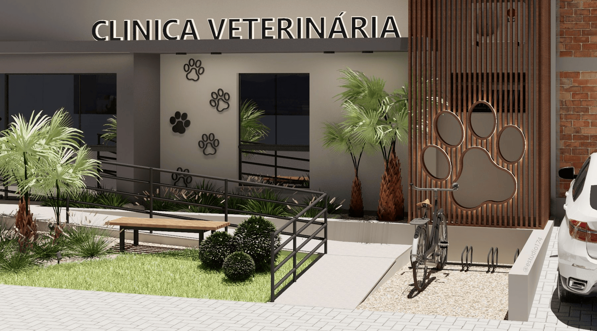
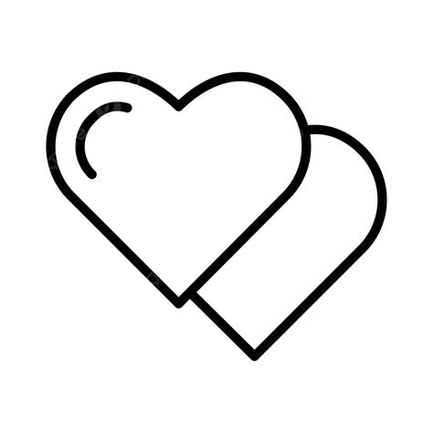

¿Quiénes Somos?
Somos una clínica veterinaria dedicada al bienestar de tus mascotas, ofreciendo atención integral y de calidad desde hace más de 10 años.

Nuestra Historia
Desde nuestros comienzos en 2010, hemos crecido junto a la comunidad, brindando cuidado y confianza a cada mascota que atendemos. Nuestro compromiso es la salud y felicidad de tus animales.
Nuestra Misión
Brindar atención veterinaria de calidad, basada en el compromiso, el respeto y el cuidado responsable de cada mascota, acompañando a sus familias con profesionalismo y dedicación.

Nuestros Valores
Lo que nos guía cada día en el cuidado de tus mascotas
